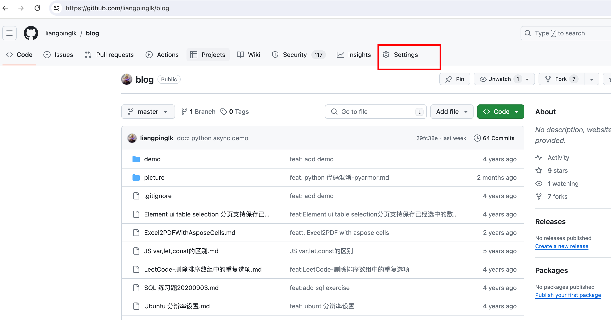
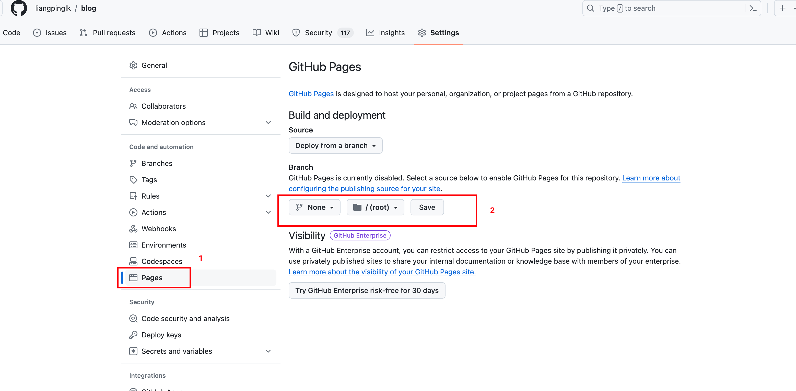

使用github pages 部署文档
习惯了使用markdown写一些笔记，但是每次阅读时不太方便，之前一直想着找时间搞一下，今天在看openresty best practices 时，发现原来的gitbook链接挂掉了，因此fork了这个项目，搞了个github pages，方便阅读，openresty-best-practices。正好借此机会，记录下如果使用github pages 部署文档。
记录下从0到1 做一个简单的demo
创建仓库
不多叙述，用过github的应该都会
安装gitbook cli
node 版本我用的6.14.4，使用nvm可以方便的管理node版本
npm install -g gitbook-cli
初始化gitbook
进入仓库目录
- 初始化gitbook 项目
如果项目没有 README.md 和 SUMMARY.md 文件，执行命令，自动成功， 如果有了，可以忽略，不用管执行
gitbook init
配置 SUMMARY.md
example
# Summary
* [Introduction](README.md)
* [Chapter 1](chapter1/README.md)
* [Section 1.1](chapter1/section1.1.md)
* [Section 1.2](chapter1/section1.2.md)
* [Chapter 2](chapter2/README.md)
* [Section 2.1](chapter2/section2.1.md)
* [Section 2.2](chapter2/section2.2.md)
预览和构建gitbook
gitbook serve
便可以在本地预览了
部署到github pages
手动部署到github pages
- 生成静态文件
gitbook build - 将生成的 _book 目录内容推送到 gh-pages分支
git add -f _book/* git commit -m "Deploy GitBook to GitHub Pages" git subtree push --prefix _book origin gh-pages
自动部署到github pages
使用github action, 创建 .github/workflows/gitbook.yml 文件，并添加以下内容：
name: Build and Deploy GitBook
on:
push:
branches:
- master
jobs:
build:
runs-on: ubuntu-latest
steps:
- name: Checkout repository
uses: actions/checkout@v2
- name: Install Node.js
uses: actions/setup-node@v2
with:
node-version: '6.14.4'
- name: Install GitBook CLI
run: npm install -g gitbook-cli
- name: Build GitBook
run: gitbook build
- name: Deploy to GitHub Pages
uses: peaceiris/actions-gh-pages@v3
with:
github_token: ${{ secrets.GITHUB_TOKEN }}
publish_dir: ./_book
设置github pages
- 点击仓库settings 
- 进入settings后，按照图示顺序点击第二步，选定gh-pages分支（没有的话进行创建） 
访问部署的文档
https://{user}.github.io/{repo_name}/
比如访问我自己的笔记： https://liangpinglk.github.io/blog/